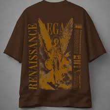

Projetos
Oversized Black: um dos primeiros projetos da marca
Conheça a proposta por trás da camisa Oversized Black, um modelo pensado para unir conforto, estilo urbano e acabamento premium.
Ler maisAcompanhe novidades, ideias, bastidores e publicações sobre os projetos de camisas da marca A/R. Aqui mostramos o desenvolvimento da loja, inspirações de estilo e futuras coleções.
A loja A/R surgiu com o objetivo de criar camisas modernas, estilosas e com identidade própria. A proposta da marca é trabalhar com peças que misturam moda urbana, conforto e visual premium.
Ler publicação
Conheça a proposta por trás da camisa Oversized Black, um modelo pensado para unir conforto, estilo urbano e acabamento premium.
Ler mais
Leve para o seu visual a essência da cultura japonesa com esta camisa exclusiva de estilo oriental. A estampa inspirada no Japão combina tradição, arte e modernidade, trazendo elementos que representam a beleza e a identidade da cultura japonesa. Perfeita para quem gosta de moda urbana, anime, cultura oriental e peças com personalida.
Ler mais
A Camisa Dragon traz uma estampa marcante inspirada na força, coragem e imponência do dragão. Com um design moderno e cheio de personalidade, essa peça é perfeita para quem gosta de se destacar e expressar um estilo único. O logo Dragon representa poder, determinação e espírito aventureiro, tornando a camisa ideal para o dia a dia ou ocasiões casuais
Ler mais
Inspirada na energia vibrante de Los Angeles, esta camisa combina estilo urbano, conforto e autenticidade em uma peça moderna e versátil. Seu design representa a essência da cidade dos sonhos, conhecida por sua diversidade cultural, criatividade e influência na moda mundial. Com uma estampa marcante e cheia de personalidade, ela transmite a atmosfera única das ruas californianas, onde o estilo casual encontra a atitude urbana.
Ler mais
Inspirada em Hermes, o lendário mensageiro dos deuses da mitologia grega, esta camiseta oversized combina história, estilo e autenticidade. Sua estampa traz referências ao universo grego, transmitindo inteligência, velocidade e poder. O corte oversized oferece um visual moderno e confortável, perfeito para quem busca destaque e personalidade em qualquer ocasião.
Ler mais
A camiseta Era Dourada é inspirada no esplendor das grandes épocas da arte, da cultura e da criatividade. Seu design marcante combina elementos clássicos com uma estética moderna, criando uma peça única para quem valoriza estilo e personalidade. A estampa remete à grandeza de um período histórico repleto de inovação e expressão artística, trazendo um visual sofisticado e autêntico..
Ler maisNovas publicações serão adicionadas conforme os projetos da loja forem evoluindo. Aqui você poderá acompanhar o crescimento da marca e conhecer melhor cada ideia.
Ver projetos de camisas